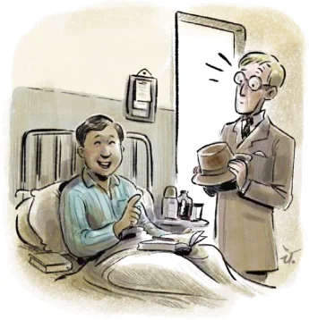

Once when Srinivasa Ramanujan was working with G. H. Hardy at the University of Cambridge, Hardy had come to visit Ramanujan at a hospital when he was ill. Hardy had ridden in a taxicab numbered 1729 and he remarked that 1729 was ‘rather a dull number,’ adding that he hoped that this was not a bad sign. Ramanujan immediately replied, “No, Hardy, it is a very interesting number. It is the smallest number that can be expressed as the sum of two cubes in two different ways”.
\(1729 = 1 + 12\)
\(= 9 + 10\) .
Because of this story, 1729 has since been known as the Hardy - Ramanujan Number. And numbers that can be expressed as the sum of two cubes in two different ways are called taxicab numbers. The next two taxicab numbers after 1729 are 4104 and 13832. Find the two ways in which each of these can be expressed as the sum of two positive cubes. How did Ramanujan know this? Well, he loved numbers. All through his life, he tinkered with numbers. During Ramanujan’s time in Cambridge, his colleagues often marveled at his ability to see deep patterns in numbers that seemed arbitrary to others. His colleague, John Littlewood, once said, “Every positive integer was one of his [Ramanujan's] personal friends”.